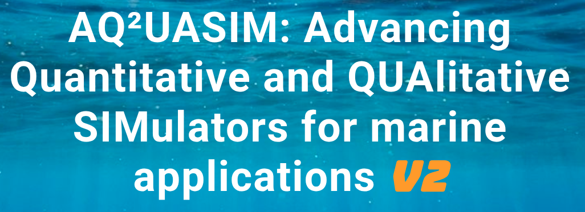
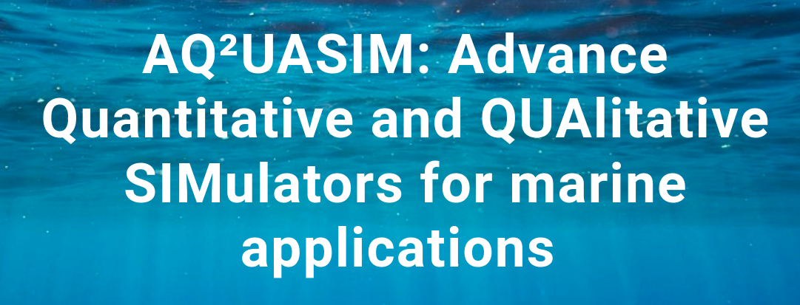

AQ²UASIM: Advancing Quantitative and QUAlitative SIMulators for marine applications v2 continues the push to lower the barriers to entry in underwater robotics by promoting realistic, open-source simulators for designing, testing, and optimizing control strategies, autonomy stacks, and software architectures. High-fidelity simulation is essential for marine robotics: it lets researchers stress-test algorithms against current, terrain, sensor noise, and actuator limits before risking hardware at sea.
This edition is endorsed as an official activity of the United Nations Decade of Ocean Science for Sustainable Development.
Organizing committee: Michele Grimaldi, Dr. Ignacio Carlucho, Dr. Markus Buchholz, Jungseok Hong, Dr. Mabel Zhang, Sebastian Realpe Rua, Dr. Fausto Ferreira, Sumer Tuncay, Carter Noh, Carlo Cernicchiaro, Tony Jacob, and Hayat Rajani. Steering committee: Dr. Maria Koskinopoulou, Dr. Nuno Gracias, and Prof. Yvan R. Petillot.

This inaugural workshop brought together researchers and engineers to explore simulation environments realistic enough to be invaluable for system design, risk assessment, and performance optimization in maritime and underwater robotics. It laid the groundwork for the second edition by identifying the simulators, benchmarks, and validation practices the community needs most.
Organizing committee: Michele Grimaldi, Dr. Ignacio Carlucho, Dr. Markus Buchholz, Dr. Mabel Zhang, Sebastian Realpe Rua, Dr. Fausto Ferreira, Sumer Tuncay, Carter Noh, Carlo Cernicchiaro, Tony Jacob, and Hayat Rajani. Steering committee: Dr. Maria Koskinopoulou, Dr. Nuno Gracias, and Prof. Yvan R. Petillot.
